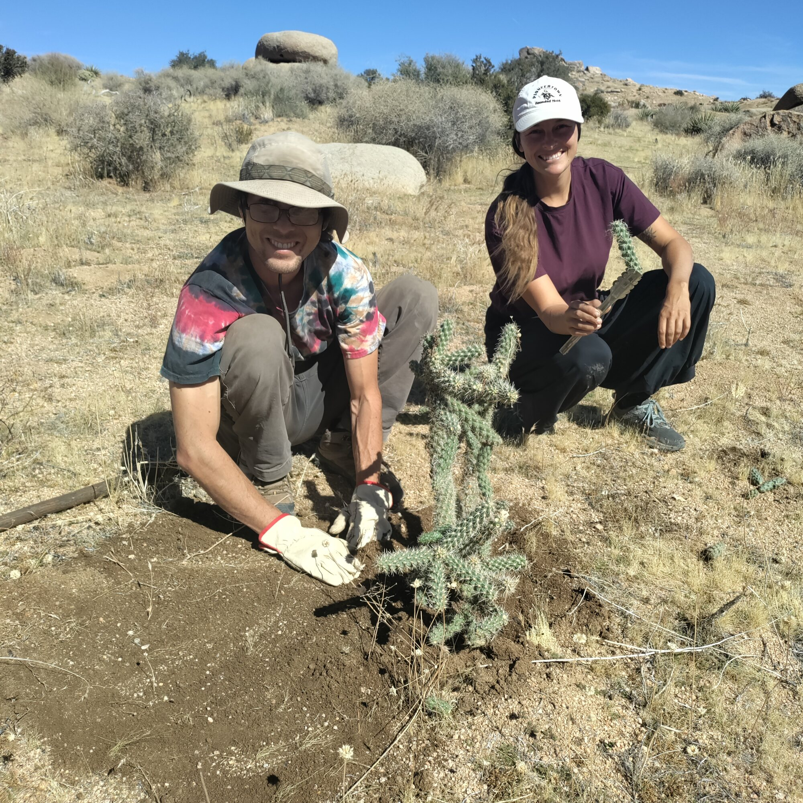
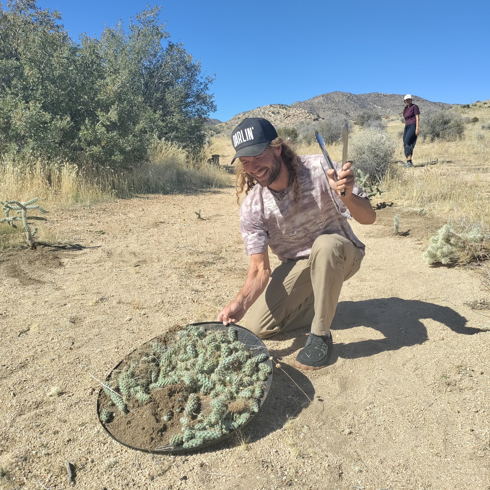
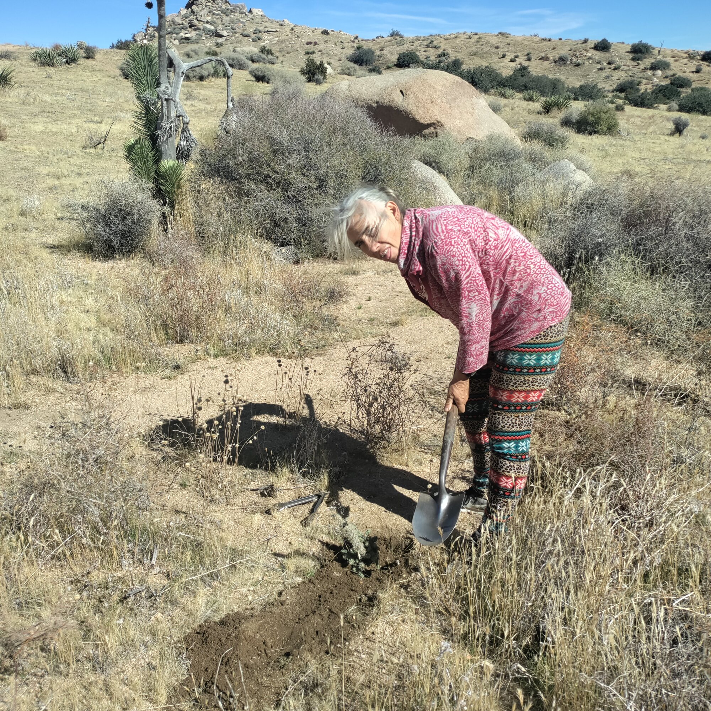

Field Report 031 · Land & Ecology
Transplanting
Cholla
Cactus
After our Wednesday Meeting we all got together to relocate several native cholla cacti from one part of the property to another.

After our Wednesday Meeting we all got together to relocate several native cholla cacti from one part of the property to another. Using gloves, shovels, and long-handled tools, we transplanted the spiny plants into their new desert habitat.
Getting to Know Our Cholla
The cactus appears to be a type of cholla (Cylindropuntia), possibly silver cholla (Cylindropuntia echinocarpa), a native of the Mojave Desert.
Several similar cholla species grow in our region:
- - Silver cholla: Silvery, densely spined branches with a somewhat open, shrub-like appearance.
- - Teddy bear cholla: Exceptionally dense, golden spines that give the cactus a soft, fuzzy appearance from a distance.
- - Buckhorn cholla: More open branching with longer, antler-like stems and generally less densely packed spines.
- - Pencil cholla: Much thinner, pencil-like stems with relatively sparse spines.
Why Cholla Matter
Cholla provide valuable shelter and nesting protection for desert birds and habitat for smaller wildlife. Their detached stem segments can also take root, allowing new plants to establish naturally.
By relocating these cacti within Boulder Gardens, we are preserving existing desert vegetation while learning more about the remarkable plants that share our landscape.
Photographic Record
The work, seen in place
Selected photographs from the private FieldStation source record.


System Thread
Related Fieldstation records
Public synopsis derived from Boulder Gardens Fieldstation Workbook source record FR031. Detailed equipment records, calculations, unresolved questions, and corrections remain in the workbook.